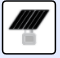
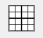
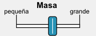
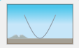
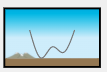
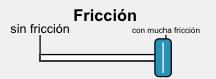

REA: Haciendo Tortos Con Energía
Tortos el pan de nuestros abuelos
Tortos Receta Tradicional
Tortos: receta tradicional vs mezcla con harina de fuerza (4 pruebas + cata)
Comparamos la receta tradicional de tortos de maíz con tres variantes que sustituyen parte del maíz por harina de fuerza de trigo. Registramos hidratación, textura y resultados de cata para seleccionar la fórmula óptima.
Seguridad / alergias: las variantes con harina de fuerza contienen gluten. Si hay celiaquía, evitar contaminación cruzada (utensilios separados) y limitar la cata a versiones sin gluten.
Diseño experimental
- Base por lote: 250 g de harina total, 200 mL de agua templada (60–70 °C) y 5–10 g de sal.
- Variable: porcentaje de sustitución de maíz por harina de fuerza (trigo).
- Si la masa no liga, añadir agua en pasos de 10 mL y anotar el agua total usada.
| Prueba | Harina de maíz (g) | Harina de fuerza (g) | Sal (g) | Agua prevista (mL) | Agua total usada (mL) | Observaciones de amasado |
|---|---|---|---|---|---|---|
| A (Tradicional) | 250 | 0 | 5–10 | 200 | __ | __ |
| B (20% fuerza) | 200 | 50 | 5–10 | 200 | __ | __ |
| C (30% fuerza) | 175 | 75 | 5–10 | 200 | __ | __ |
| D (40% fuerza) | 150 | 100 | 5–10 | 200 | __ | __ |
Nota: puedes ajustar los porcentajes (p. ej., 0%, 15%, 30%, 45%) si quieres un abanico distinto.
Procedimiento
- Pesar harinas y sal (anotar masas).
- Medir 200 mL de agua templada.
- Amasar hasta homogeneizar. Si no liga, añadir agua en incrementos de 10 mL (anotar cada adición y el total).
- Reposo 10–15 min tapado.
- Formar mini-tortos (tamaño cata) y cocer 1–2 min por lado en plancha/sartén.
Registro de datos técnicos
| Prueba | Harina total (g) | Proporción maíz:fuerza | Agua total (mL) | Hidratación (%) | Sal (g) | Textura masa (1–5) | Elasticidad (1–5) | Notas |
|---|---|---|---|---|---|---|---|---|
| A | 250 | 100:0 | __ | __ | __ | __ | __ | __ |
| B | 250 | 80:20 | __ | __ | __ | __ | __ | __ |
| C | 250 | 70:30 | __ | __ | __ | __ | __ | __ |
| D | 250 | 60:40 | __ | __ | __ | __ | __ | __ |
Cálculo de hidratación: Hidratación (%) = (Agua total (g) / Harina total (g)) × 100. Aproxima 1 mL ≈ 1 g para agua.
Baker’s % de sal: %Sal = (Sal / Harina total) × 100 → objetivo 2–4%.
Cata sensorial (panel de clase)
Servir bocados ciega (A–D). Cada equipo puntúa con emoticonos (1–5) y añade comentarios.
| Prueba | Apariencia | Textura | Sabor | Global | Comentarios |
|---|---|---|---|---|---|
| A (Trad.) | 😀🙂😐🙁😣 | 😀🙂😐🙁😣 | 😀🙂😐🙁😣 | 😀🙂😐🙁😣 | __ |
| B (20%) | 😀🙂😐🙁😣 | 😀🙂😐🙁😣 | 😀🙂😐🙁😣 | 😀🙂😐🙁😣 | __ |
| C (30%) | 😀🙂😐🙁😣 | 😀🙂😐🙁😣 | 😀🙂😐🙁😣 | 😀🙂😐🙁😣 | __ |
| D (40%) | 😀🙂😐🙁😣 | 😀🙂😐🙁😣 | 😀🙂😐🙁😣 | 😀🙂😐🙁😣 | __ |
Suma de valoraciones por prueba → clasificar de mayor a menor puntuación global.
Preguntas guía y conclusiones
- ¿Qué porcentaje de harina de fuerza mejoró más la cohesión sin perder identidad de torto?
- ¿Cómo varió la hidratación necesaria entre A–D? ¿Por qué?
- ¿Coinciden los resultados de la cata con las medidas técnicas (elasticidad, textura)?
- Receta recomendada para clase: indicar gramos de maíz, fuerza, sal y agua total.
Producto final: hoja de datos completa + gráfico “% fuerza vs puntuación global de cata” + receta ganadora (formato tarjeta) + breve justificación (≤120 palabras).
Escalado de cantidades (opcional)
Si la receta ganadora usa 250 g harina total y 200 mL agua, para 3 L de masa (≈ 3 000 g) calcula el factor de escala y aplica a maíz, fuerza, sal y agua manteniendo porcentajes.
| Destino | Masa total objetivo (g) | Factor de escala | Maíz (g) | Fuerza (g) | Sal (g) | Agua (mL) |
|---|---|---|---|---|---|---|
| Clase / fiesta | __ | __ | __ | __ | __ | __ |
Factor = masa objetivo / masa base del lote.
La energía

En este apartado del recurso vamos a ver:
- Descubriendo la energía. ¿Qué es la energía?, ¿se puede ver u oír?, ¿se puede sentir?, ¿es fácil definirla?, ¿disponemos de evidencias para saber que existe? Responderemos a estas preguntas mediante tres pistas que nos llevaran a descubrir la energía.
- Un paseo por la historia de la energía. Desde siempre los seres humanos hemos dependido de la energía para sobrevivir. Nos daremos un paseo por la historia para investigar los avances tecnológicos y su conexión con la energía, a partir de una lectura cooperativa.
Descubriendo la energía
Definición de energía
¿Qué es la energía?, ¿se puede ver u oír?, ¿se puede sentir?, ¿es fácil definirla?, ¿disponemos de evidencias para saber que existe?
Solo tenemos que observar los cambios o las transformaciones que se producen en la naturaleza... como el cambio de posición en el movimiento de un coche o el cambio de temperatura en el calentamiento o enfriamiento de un cuerpo. La respuesta está en la energía, ella es la responsable de estos cambios.

En esta serie de actividades iremos descubriendo la energía, como si fuéramos detectives.
Tarea: Investigando la definición de energía
- Duración:
- 2 sesiones
- Agrupamiento:
- individual/parejas/grupo pequeño
El profesor o profesora nos proporcionará un sobre con 3 pistas. Si las seguimos, llegaremos a definir qué es la energía. Finalmente realizamos un informe con las pistas obtenidas.

En la primera pista veremos un vídeo, en la segunda trabajaremos con fotografías y en la tercera pista evidenciaremos la energía que está a nuestro alrededor. ¡¿Preparados y preparadas?!
Actividad 1: Primera pista "el video energético"
Actividad 2: Segunda pista " las fotografías energéticas"
Ahora que ya sabemos que la energía es la responsable de los cambios en la naturaleza, qué características tiene y los principales tipos, vamos a comprobar si sabemos identificarlas en las fotografías energéticas. Realizamos la actividad en parejas.
Alguna de las fotografías pude tener más de una solución. Las soluciones las podemos encontrar en la galería de imágenes:
Enlace a Fotografías energéticas: ¿Qué energía es? (descarga de documento en formato editable odt y pdf).

|

|

|
|
ENERGÍA 1: |
ENERGÍA 2: | ENERGÍA 3: |
|
|
|
|
|
ENERGÍA 4: |
ENERGÍA 5: | ENERGÍA 6: |
|
|

|

|
|
ENERGÍA 7: |
ENERGÍA 8: | ENERGÍA 9: |
Fotografías energéticas: ¿Qué energía es?
 Respuesta: Energía eléctrica
Respuesta: Energía eléctrica Respusta: Energía luminosa/Energía radiante
Respusta: Energía luminosa/Energía radiante Respuesta: Energía cinética
Respuesta: Energía cinética Respuesta: Energía química
Respuesta: Energía química Respuesta: Energía potencial/ Energía mecánica
Respuesta: Energía potencial/ Energía mecánica Respuesta: Energía hidráulica/ Energía mecanica
Respuesta: Energía hidráulica/ Energía mecanica Respuesta: Energía nuclear
Respuesta: Energía nuclear Respuesta: Energía sonora
Respuesta: Energía sonora Respuesta: Energía térmica
Respuesta: Energía térmica


Tercera pista: Nuestras evidencias y conclusiones
Trabajando en grupo, recogeremos ocho datos que pongan en evidencia la energía a nuestro alrededor y los dispondremos en esta tabla:
Actividad 3: Nuestras evidencias
| Sabemos que la energía está aquí porque….. | Forma de energía que explica la evidencia (eléctrica, luminosa, química…) |
|
|
|
|
|
|
|
|
|
|
|
|
|
|
|
|
|
|
|
|
|
|
|
|
Actividad 4: Informe
Con estas tres pistas ya somos capaces de escribir un informe individual. Escogemos un tipo de energía que observemos a nuestro alrededor y:
- La definimos
- Comentamos qué cambios produce
- Hablamos de sus características
- Ponemos varios ejemplos y explicamos cómo puede transferirse de un cuerpo a otro
- Añadimos algunas imágenes que las caracterice
Para escribirlo correctamente, podemos seguir las indicaciones de la guía para elaborar un informe (descargar documento editable odt y en pdf).
Evaluación y reflexión
Una vez que hemos finalizado la tarea, es un buen momento para reflexionar en nuestro diario de aprendizaje. Algunas sugerencias pueden ser:
- ¿Qué he aprendido?
- ¿Qué me ha sorprendido más de todo el proceso? ¿Por qué?
- ¿He cambiado alguna idea previa? ¿Cuál?
- ¿Qué me ha resultado más difícil? ¿Por qué?
Evaluación
La tarea se evalúa con la siguiente escala genérica de valoración para un informe escrito científico (descargar en formato editable odt, y en pdf):
.png "Escala de un informe")
Un paseo por la historia de la energía
Del fuego a las energías renovables
Desde el primer fuego hasta las energías renovables los seres humanos siempre hemos dependido de la energía para sobrevivir.

Conozcamos cómo ha evolucionado la energía a lo largo de la historia, qué avances tecnológicos nos ha aportado, cómo ha contribuido al bienestar social y qué influencia ha tenido en el medio ambiente.
Investiguemos la energía y su impacto social y cultural mediante los avances tecnológicos aportados.
Tarea: Investigando la historia de la energía
- Duración:
- 2 sesiones
- Agrupamiento:
- en pequeño grupo
¡Empecemos con la tarea!
Realizamos en pequeño grupo una investigación analizando la relación que hay entre la energía y el desarrollo tecnológico en diferentes épocas de la historia.
Para ello realizaremos una lectura cooperativa y un informe sobre los avances tecnológicos en la historia de la humanidad.
Actividad 1: Lectura cooperativa
Hacemos una lectura cooperativa del texto “ Un paseo por la historia”: un alumno o alumna comienza leyendo el primer párrafo en voz alta, el siguiente alumno o alumna hace un resumen de lo escuchado y lee el segundo párrafo, así hasta completar el texto.
Una vez finalizada la lectura debatimos sobre el tema.
|
UN PASEO POR LA HISTORIA DE LA ENERGÍA A lo largo de la historia el hombre ha buscado incesantemente fuentes de energía para su provecho; desde la Prehistoria, cuando la humanidad hizo el importante descubrimiento del fuego para calentarse, alumbrarse y cocinar los alimentos, pasando por la Edad Media en la que se introdujeron molinos de viento para moler cereales, hasta la Edad Contemporánea en la que se ha llegado a obtener energía en la fisión del átomo y producir los sofisticados combustibles que permiten la propulsión aeroespacial. |
|
Desde la Prehistoria La primera evidencia que se tiene del uso de una fuente de energía externa por parte del ser humano llegó hace un millón de años con el descubrimiento del fuego. Un hito que dio el pistoletazo de salida de una larga carrera, que hoy continúa, por explotar los recursos energéticos. Fueron necesarios varios miles de años para que el ser humano aprendiera a controlar el fuego a su antojo siempre que necesitara calentarse, cocinar o defenderse de las bestias. Ya en el Neolítico, los seres humanos aprendieron a cultivar plantas y a domesticar a los animales, asegurándose una fuente constante de alimento que les permitió abandonar la vida nómada. Más tarde, el desarrollo de la alfarería y el posterior hallazgo de la metalurgia, implicaron la combustión de madera y carbón vegetal de forma intensiva. La invención de la rueda (3500 a.C.) y de la vela facilitaron el transporte por tierra y mar. La primera, explotando la fuerza animal; la segunda, la energía del viento. |
|
Pasando por la Edad Media En la Edad Media surgirían los molinos hidráulicos y de viento, para moler cereales o bombear agua. También empezó a proliferar el uso del carbón como fuente de energía por combustión frente a la madera. A China se le debe el descubrimiento de la pólvora a finales de la Edad Media, que otorgaba un gran poder destructivo a partir de la energía química que almacena. |
|
Siglos XVII y XVIII A finales del siglo XVII, tienen lugar importantes progresos en la Física y la Química, que darían lugar al desarrollo de la máquina de vapor, pilar de la Revolución Industrial en el XVIII. Sus aplicaciones en el transporte marítimo y en el ferrocarril se generalizaron a nivel mundial. |
|
Siglo XIX La combustión de la madera sostuvo hasta mediados del XIX este desarrollo hasta que, primero con el carbón y después con el petróleo, los combustibles fósiles tomaron un protagonismo que aún perdura. Los conocimientos sobre la Electricidad y el Electromagnetismo hicieron posible transformar la energía eléctrica en mecánica. Así llegaron los motores de corriente eléctrica continua, después alterna, el transporte de la electricidad, el alumbrado eléctrico, etc. A finales del s. XIX, Nikolaus August Otto inventaría el motor de combustión interna, que dispararía la demanda de petróleo, que desbancaría a la de carbón. A la vez, el consumo de electricidad seguiría creciendo alimentado por las centrales hidroeléctricas y térmicas. |
|
Siglo XX y XXI Las bases de la Energía Nuclear se descubrirían a comienzos del siglo XX, llevándose a cabo la primera fisión artificial del átomo de Uranio en 1938 de la mano Otto Hahn. Cuatro años después, Enrico Fermi construiría el primer reactor nuclear. Paralelamente, se desarrollarían sus aplicaciones bélicas, puestas en práctica en los bombardeos de Hiroshima y Nagasaki, y cuya amenaza marcaría la Guerra Fría entre EE.UU y la URSS durante la segunda mitad del siglo XX. En el último tercio del siglo XX y comienzos del XXI, la preocupación por la contaminación, el cambio climático y la escasez de recursos fósiles, están dirigiendo los esfuerzos hacia la producción de energías renovables (solar, eólica o de la biomasa, etc.) |
Debatimos:
Una vez finalizada la actividad, hacemos un pequeño debate en clase con estas cuestiones. Primero las pensamos individualmente.
- ¿Qué dificultades tuvimos al hacer la lectura?
- ¿Qué época nos llama la atención? ¿ Por qué?
- ¿Qué energía se utiliza en esta época?
- ¿Qué avance tecnológico aparece?
- ¿Cuál podría su impacto social y medioambiental?
Actividad 2: Inventos energéticos en la historia
Ahora es el momento de investigar los avances tecnológicos que aparecen en la lectura.
El profesor o profesora nos reparte unos sobres con “inventos” que han facilitado el bienestar humano y que están relacionados con la energía.
Cada grupo investiga su invento para planificar el informe científico, se puede tener en cuenta:
- Época a la que pertenece el invento
- La fuente de energía que utiliza
- Las transformaciones energéticas que se pueden dar
- Sus principales usos
- Influencia en el medio ambiente
- Imagen o video que aporten información
Sobres de los inventos:
| SOBRES | INVENTOS ENERGÉTICOS |
|
Sobre 1 |
|
|
Sobre 2
|
|
|
Sobre 3 |
|
|
Sobre 4 |
|


Información adicional para elaborar el informe:
Evaluación y reflexión
Una vez que hemos finalizado la tarea, es un buen momento para reflexionar en nuestro diario de aprendizaje. Algunas sugerencias pueden ser:
- ¿Qué has aprendido?
- ¿Qué me ha sorprendido mas de todo el proceso?¿ Po qué?
- ¿He cambiado alguna idea previa? ¿Cuál?
- ¿Qué me ha resultado más difícil? ¿ Por qué?
Evaluación
La tarea se evalúa con las siguientes escalas
1.-Escala genérica de valoración para un informe escrito científico (descargar en formato editable odt y en pdf):

2.-"escala genérica de valoración para una lectura científica" (descargar en formato editable, odt, y en pdf):

Transformación y conservación de la energía

En este apartado del recurso vamos a ver:
- Cambios y formas de energía. La energía se encuentra en constante transformación pasando de unas energías a otras. Tenemos multitud de ejemplos a nuestro alrededor, que ponen de manifiesto estas transformaciones. Vamos a investigar experimentalmente las transformaciones energéticas que tienen lugar en diferentes sistemas cotidianos.
- Física del skate. Para ser un buen skater, ¿conviene saber algo de Física?, la energía, ¿tiene algo que ver?, ¿se conserva la energía cuando un patinador o una patinadora realiza su recorrido? Investigaremos experimentalmente qué sucede con las energías en una pista de patinaje.
Cambios y formas de energía
Las Transformaciones energéticas
La energía se encuentra en constante transformación pasando de unas formas de energía a otras formas de energía. Por ejemplo, en un volcán la energía interna de las rocas fundidas puede transformarse en energía térmica produciendo gran cantidad de calor; las piedras lanzadas al aire y la lava en movimiento poseen energía mecánica; se produce la combustión de muchos materiales, liberando energía química; etc.
Por otra parte, el Principio de conservación de la energía indica que la energía no se crea ni se destruye; sólo se transforma de unas formas en otras. En estas transformaciones, la energía total permanece constante; es decir, la energía total es la misma antes y después de cada transformación.
Tenemos multitud de ejemplos a nuestro alrededor que ponen de manifiesto estas transformaciones energéticas, es decir, cómo a partir de un tipo de energía, mediante un conjunto de transformaciones energéticas, se obtiene otra diferente.
Nuestro reto es investigar experimentalmente, mediante una simulación digital, las transformaciones energéticas que tienen lugar en diferentes sistemas.
Tarea: Investigando las transformaciones energéticas
- Duración:
- 2 sesiones
- Agrupamiento:
- En grupo pequeño
En nuestra tarea vamos a investigar un sistema complejo en el que intervienen diferentes energías y transformaciones. Trabajamos en grupo. Cada grupo analizara un sistema de los posibles que se dan en la simulación. Los sistemas a investigar los propone el profesor o profesora dispuestos en cuatro sobres de diferentes colores. Una vez terminada la investigación cada grupo expondrá y explicara el sistema investigado.
En nuestra investigación utilizaremos la simulación de PHET: Cambios y formas de energía. En esta analizaremos las transformaciones energéticas en diferentes sistemas.

En la simulación aparecen dos modos: Introducción y sistemas.
¡Empecemos a experimentar con la primera modalidad!
Actividad 1: Empezamos a experimentar
Empezamos a entrenarnos para ver el funcionamiento de la simulación. Abrimos la simulación en introducción y vemos sus diferentes elementos:
Vemos que tenemos dos líquidos y dos sólidos para experimentar, realizamos el siguiente experimento:
Experimento 1: anotaremos en nuestros cuadernos, los experimentos realizados y las evidencias obtenidas:
|
Ponemos el agua encima de fuego, metemos el termómetro dentro del agua, manipulamos el mando calor-frio. ¿Qué pasará con la temperatura? |
¿ Qué pasa con la energía? |
Probamos con dos materiales a la vez, agua y aceite, enlazamos calentadores. ¿Qué pasará con la temperatura? |
|
Hipótesis: |
Hipótesis: |
Hipótesis: |
|
Comprobación: |
Comprobación: |
Comprobación: |
Experimento 2:
Ya estamos dispuestos a probar con otros materiales así que anotamos nuestros resultados, organizándolos en una tabla, y para ello tenemos en cuenta:
- Tipo de material
- Tiempos de medida
- Numero de símbolos de energía, retenidos en el material
- Temperatura que marca el termómetro, en diferentes tiempos
Un ejemplo de tabla para organizar los resultados puede ser la siguiente:
| Tipo de material | Tiempos de medida | Temperatura del termómetro | Energías acumuladas |
| Agua | |||
| Aceite | |||
| Ladrillo | |||
| Hierro |
Actividad 2: Investigamos los sistemas
Entramos en la simulación en la modalidad sistemas y antes de realizar ninguna actividad, manipulamos los diferentes objetos para conocer su funcionamiento:
- En la parte de debajo de la simulación, aparecen los objetos a elegir que están organizados en tres grupos (fuente, transformador y efecto).
- En “símbolo de energía” aparecen los diferentes tipos de energía implicados tanto en la fuente como en el efecto.
El profesor o profesora reparte 4 sobres con los sistemas a investigar:
- Rojo- Grupo 1
- Azul- Grupo 2
- Verde- Grupo 3
- Naranja- Grupo 4
Cada grupo abre su sobre. ¡Empezamos a investigar! :
|  | ||||
 |
||||
 |
||||
Para elaborar nuestra exposición tendremos en cuenta:
- Objetos implicados: esquema grafico
- ¿Qué tipos de energía aparecen en cada objeto?
- ¿Qué pasa con el termómetro?
- Si cambiamos la placa solar por la rueda, ¿qué pasa?, ¿por qué?
- ¿Cómo se transforman las energías?
Cada grupo analizara lo que ocurre en su sistema, organizará toda la información y al final, expondrá oralmente su sistema al resto de la clase con las conclusiones obtenidas.
Evaluación y reflexión
Una vez que hemos finalizado la tarea, es un buen momento para reflexionar en nuestro diario de aprendizaje. Algunas sugerencias pueden ser:
- ¿Qué he aprendido?
- ¿Qué me ha sorprendido más de todo el proceso? ¿Por qué?
- ¿He cambiado alguna idea previa? ¿Cuál?
- ¿Qué me ha resultado más difícil? ¿Por qué?
Evaluación
La tarea se evalúa con las siguientes escalas:
1.-Para evaluar emplearemos la siguiente escala de valoración para simulaciones digitales de ciencias ( descarga en formato editable odt y en pdf):

2.-La tarea se evalúa con la siguiente escala genérica de exposición oral en ciencias (descargar en formato editable odt y en pdf):

Fisica del skate
Energía cinética y potencial
El skate es uno de los deportes más extendidos entre la gente joven. El nombre del deporte, viene de la tabla utilizada o monopatín, cuyo nombre es "Skate" en inglés. Pero para ser un buen skater, ¿conviene saber algo de Física?, la energía, ¿tiene algo que ver?, ¿se conserva la energía cuando un patinador o patinadora realiza su recorrido?

Ese será nuestro reto: investigar si se conserva la energía cuando andamos en una tabla de skate
Tarea: Conservación de la energía
- Duración:
- 2 sesiones
- Agrupamiento:
- En grupo pequeño
Vamos a comprobar experimentalmente si se conserva la energía en tres situaciones diferentes. Realizaremos las tres actividades en grupo e iremos cotejando los resultados obtenidos.
Veamos este video:
La energía
Un patinador o patinadora que se encuentra a una determinada altura tiene energía. Esta energía debido a la posición que ocupa, a su altura, recibe el nombre de energía potencial gravitatoria. ¿Pero qué ocurre cuando el patinador se lanza por la pista? Vemos que se mueve y va adquiriendo velocidad. En otras ocasiones se para. ¿Qué es lo que está sucediendo?
Cuando se desplaza por la pista de skate, esta energía potencial se va transformando en energía cinética. La energía mecánica, es la suma de la energía cinética, Ec, y de la energía potencial, Ep:
Em = Ec + Ep
Por el “Principio de conservación de la energía” sabemos que la energía no se crea ni se destruye, solo se transforma de unas formas en otras. En estas transformaciones la energía total se mantiene constante.
En estas transformaciones la energía se degrada, pierde calidad. En toda transformación, parte de la energía se disipa en forma de calor y se transforma en energía térmica. Por ejemplo en la energía mecánica por choque o rozamiento.
Nuestra hipótesis
Veamos, si no hay rozamiento ¿qué le ocurre a la energía mecánica durante el recorrido en la pista?, ¿se conserva?, ¿en qué lugar el movimiento es el más rápido posible?, ¿en algún momento se detiene?, qué factores influyen?.
Hacemos una hipótesis y no olvidamos incluirla en nuestro cuaderno de investigación
Actividad 2: Experimentación
Comprobamos nuestra hipótesis, para ello planificamos la experimentación. En nuestra experimentación, utilizaremos una simulación de PHET: Pista de patinar.
Trabajamos en grupos y con esta simulación haremos cuatro experimentaciones:
Conocemos la simulación
Antes de empezar a experimentar veamos las diferentes opciones que tenemos
|
Opción 1 (gráfico de pie de energías) |
Opción 2 (gráfico de barras de energías) |
Opción 3 (cuadrícula) |
Opción 4 (influencia de la velocidad) |
Opción 5 (influencia de la masa) |
Opción 6 (tipo de movimiento, normal o rápido) |
|  |  | ||||
| Opción 7(tipo de pistas) | |||||
|
 pista 1 |
pista 2 |
 pista 3 |
|||

Entramos en la simulación y probamos las diferentes opciones.
En la simulación tenemos tres modos: introducción, fricción y patio.
Experimentamos sin rozamiento
Empezamos en el modo introducción de la simulación :
En un principio elegimos movimiento normal y no variamos la masa, experimentamos con las tres pistas y contestamos, anotamos las respuestas en nuestro cuaderno de investigación.
| Pistas |
Tipos de energías implicadas |
Energías a 0 metros y a 6 metros | Velocidad en el punto más alto y más bajo | Valor de la energía total en el punto más alto y más bajo |
| Pista 1 | ||||
| Pista 2 | ||||
| Pista 3 |
- Comprobamos los puntos anteriores con movimiento lento: ¿Notamos alguna diferencia?
- Variamos la masa: ¿Notamos algún cambio?
Cotejamos los resultados con el resto de la clase.
Experimentamos con rozamiento
En modo fricción, en esta experimentación, introducimos una nueva opción, la fricción. Veamos ¿cómo influye la fricción?
Fijamos la fricción media, velocidad normal y masa media, empezamos a experimentar, y anotamos las respuestas en el cuaderno de investigación
|  |
Tipos de energías implicadas |
Energías a 0 metros y a 6 metros | Velocidad en el punto más alto y más bajo | Valor de la energía total en el punto más alto y más bajo |
| Pista 1 | ||||
| Pista 2 | ||||
| Pista 3 |
- ¿Cómo influye la fricción?
- Variamos la fricción. ¿qué observamos ?
- Variamos masa y anotamos nuestras observaciones
Cotejamos los resultados con el resto de los grupos
Inventamos una pista de patinaje
En el modo "patio" se introducen dos nuevas opciones, una para construir pistas de patinaje otra que nos ofrece dos tipos de patines.
| Herramienta para construir pistas |
Dos tablas skate, una de ellas que puede saltar |
Vamos a construir nuestra propia pista de patinaje y utilizando los dos patinetes , explicamos lo que sucede en sus trayectorias, teniendo en cuenta nuestras observaciones, recuerda anotar tus respuestas en tu cuaderno de investigación.
Recuerda fijar la masa
|
Tabla skate sin salto |
Tabla skate con salto |
|
Realiza la experiencia sin fricción
|
Realiza la experiencia sin fricción
|
|
Realiza la experiencia con fricción
|
Realiza la experiencia con fricción
|
Cotejamos los resultados con el resto de los grupos y debatimos sobre los resultados obtenidos.
Hemos aprendido qué energías entran en juego en una pista de patinaje y cómo se producen las transformaciones energéticas. Veamos si somos capaces de resolver el siguiente cuestionario.
Actividad 3: Poniéndonos a prueba
Solución
Solución
Solución
Solución
Solución
Evaluación y reflexión
Una vez que hemos finalizado la tarea, es un buen momento para reflexionar en nuestro diario de aprendizaje. Algunas sugerencias pueden ser:
- ¿Qué he aprendido?
- ¿Qué me ha sorprendido más de todo el proceso? ¿Por qué?
- ¿He cambiado alguna idea previa? ¿Cuál?
- ¿Qué me ha resultado más difícil? ¿Por qué?
Evaluación
Para evaluar emplearemos la siguiente escala: Escala de valoración para simulaciones digitales de ciencias (descarga en formato editable odt, y en pdf ):
Fuentes de energía

En este apartado del recurso vamos a ver:
- ¿De dónde viene la energía?. Todo a nuestro alrededor necesita mas o menos energía para funcionar. ¿De dónde viene esta energía? ¿Cuál es su origen? ¿Dónde está almacenada? Pues... toda la energía proviene del sol ¿A que no lo pensabas? Vamos a investigar cómo se produce.
- El viaje de la electricidad. ¿Te has preguntado alguna vez de dónde proviene la electricidad y cómo llega a tu casa? Esta será nuestra investigación averiguar el camino de la electricidad.
- La Isla Verde. ¿Sabías que una de cada cinco personas en el mundo no tiene acceso a la electricidad? En esta tarea pondremos a prueba nuestra capacidad para resolver situaciones problema y utilizar recursos naturales para producir electricidad.
¿De dónde viene la energía? |
El viaje de la electricidad |
La Isla Verde |
|
Todo a nuestro alrededor necesita mas o menos energía para funcionar. ¿De dónde viene esta energía? ¿Cuál es su origen? ¿Dónde está almacenada? Pues... toda la energía proviene del sol ¿A que no lo pensabas? Vamos a investigar cómo se produce. |
¿Te has preguntado alguna vez de dónde proviene la electricidad y cómo llega a tu casa? Esta será nuestra investigación averiguar el camino de la electricidad. |
¿Sabías que una de cada cinco personas en el mundo no tiene acceso a la electricidad? En esta tarea pondremos a prueba nuestra capacidad para resolver situaciones problema y utilizar recursos naturales para producir electricidad. |
¿De dónde viene la energía?
El origen de la energía
Todo a nuestro alrededor necesita mas o menos energía para funcionar. Pero toda la electricidad que consumimos, los combustibles para los transportes, el gas con el que cocinamos... ¿De dónde vienen? ¿Cuál es su origen? ¿Dónde está almacenada?
Pues resulta que casi todas las fuentes de energía provienen de... el sol ¿A que no lo pensabas?

La energía del sol es la causa de que se produzca el viento, de que se evaporen las aguas superficiales, de la formación de nubes, de la lluvia. Pero también, su calor y su luz son la base de numerosas reacciones químicas indispensables para el desarrollo de la vida, de los vegetales y de los animales que con el paso de los siglos han originado combustibles fósiles como el carbón o el petróleo.
Por lo tanto, gracias a la energía del sol, disponemos de todas las demás, las denominadas “renovables” (solar, eólica, biomasa…) y las “no renovables” (carbón, gas…). La utilización de la radiación solar no es otra cosa que su conversión en energía útil para la humanidad.
Todas estas formas de energía son transformadas y canalizadas hasta nuestras ciudades y hogares en forma de energía eléctrica para el consumo. Cada vez hay más demanda de energía, de hecho se prevé que dentro de 20 años el consumo puede aumentar un 70%. Por ello, se hace necesario impulsar las fuentes energéticas inagotables y concienciar a la población.
Investiguemos el origen de la energía y contribuyamos a tomar conciencia, mediante un folleto informativo sobre energías renovables.
Tarea: El origen de la energía
- Duración:
- 3 sesiones
- Agrupamiento:
- En grupo pequeño

Por medio de esta tarea, vamos a contribuir a que nuestra comunidad tome conciencia del valor de las energías renovables. Para ello, vamos a realizar una serie de actividades para investigar las energías. Las haremos en grupo, nuestro objetivo será obtener información para realizar un folleto informativo de energías renovables, que colocaremos en la web del centro y repartiremos entre toda la Comunidad Educativa !Manos a la obra!
Actividad 1: Investigando las fuentes de energía
Vamos a responder un cuestionario sobre energías, pero antes de realizarlo vamos a repasar nuestros conocimientos sobre fuentes de energía.

¡Empecemos! Repasamos las fuentes de energía.
Veamos el video y recordemos las fuentes de energía, anotemos lo más relevante para utilizarlo en el cuestionario. Nos vendrá bien anotar las siguientes informaciones:
- Fuentes de energía renovables y características
- Fuentes de energías no renovables y características
Actividad 2: ¿Qué sabemos de las energías?
Elija la respuesta correcta
2
%E9%B0%F3%E1%FB%F5%FC%F3%E6%E7%E0%F3%B0%A8%B0%B0%BE%B0%F3%E7%E6%FA%FD%E0%B0%A8%B0%B0%BE%B0%F3%E7%E6%FA%FD%E0%C4%FB%F6%F7%FD%B0%A8%B0%B0%BE%B0%E6%EB%E2%F7%D5%F3%FF%F7%B0%A8%B0%C3%E7%D7%EA%E6%B0%BE%B0%F7%FC%F6%C4%FB%F6%F7%FD%B0%A8%A2%BE%B0%FB%F6%C4%FB%F6%F7%FD%B0%A8%B0%B0%BE%B0%E1%E6%F3%E0%E6%C4%FB%F6%F7%FD%B0%A8%A2%BE%B0%FB%FC%E1%E6%E0%E7%F1%E6%FB%FD%FC%E1%D7%EA%F7%B0%A8%B0%B7%A1%D1%E2%B7%A1%D7%D7%FE%FB%F8%F3%B7%A0%A2%FE%F3%B7%A0%A2%E0%F7%E1%E2%E7%F7%E1%E6%F3%B7%A0%A2%F1%FD%E0%E0%F7%F1%E6%F3%B7%A1%D1%BD%E2%B7%A1%D7%B0%BE%B0%FB%FC%E1%E6%E0%E7%F1%E6%FB%FD%FC%E1%B0%A8%B0%D7%FE%FB%F8%F3%B2%FE%F3%B2%E0%F7%E1%E2%E7%F7%E1%E6%F3%B2%F1%FD%E0%E0%F7%F1%E6%F3%B2%B0%BE%B0%E1%FA%FD%E5%DF%FB%FC%FB%FF%FB%E8%F7%B0%A8%F4%F3%FE%E1%F7%BE%B0%FD%E2%E6%FB%FD%FC%E1%C0%F3%FF%F6%FD%FC%B0%A8%F4%F3%FE%E1%F7%BE%B0%F3%FC%E1%E5%F7%E0%E1%C0%F3%FF%F6%FD%FC%B0%A8%F4%F3%FE%E1%F7%BE%B0%E1%FA%FD%E5%C1%FD%FE%E7%E6%FB%FD%FC%B0%A8%E6%E0%E7%F7%BE%B0%E6%FB%FF%F7%C1%FA%FD%E5%C1%FD%FE%E7%E6%FB%FD%FC%B0%A8%A1%BE%B0%E7%E1%F7%DE%FB%E4%F7%E1%B0%A8%E6%E0%E7%F7%BE%B0%FC%E7%FF%F0%F7%E0%DE%FB%E4%F7%E1%B0%A8%A1%BE%B0%FB%E6%FB%FC%F7%E0%F3%E0%EB%B0%A8%E9%B0%E1%FA%FD%E5%D1%FE%E7%F7%B0%A8%F4%F3%FE%E1%F7%BE%B0%F1%FE%E7%F7%D5%F3%FF%F7%B0%A8%B0%B0%BE%B0%E2%F7%E0%F1%F7%FC%E6%F3%F5%F7%D1%FE%E7%F7%B0%A8%A6%A2%BE%B0%E1%FA%FD%E5%D1%FD%F6%F7%D3%F1%F1%F7%E1%E1%B0%A8%F4%F3%FE%E1%F7%BE%B0%F1%FD%F6%F7%D3%F1%F1%F7%E1%E1%B0%A8%B0%B0%BE%B0%FF%F7%E1%E1%F3%F5%F7%D1%FD%F6%F7%D3%F1%F1%F7%E1%E1%B0%A8%B0%B0%EF%BE%B0%E3%E7%F7%E1%E6%FB%FD%FC%E1%D5%F3%FF%F7%B0%A8%C9%E9%B0%E6%EB%E2%F7%B0%A8%A3%BE%B0%E6%FB%FF%F7%B0%A8%A2%BE%B0%FC%E7%FF%F0%F7%E0%DD%E2%E6%FB%FD%FC%E1%B0%A8%A1%BE%B0%EA%B0%A8%A2%BE%B0%EB%B0%A8%A2%BE%B0%F3%E7%E6%FA%FD%E0%B0%A8%B0%C5%FB%F9%FB%E2%F7%F6%FB%F3%B0%BE%B0%F3%FE%E6%B0%A8%B0%C1%FD%FE%B0%BE%B0%F1%E7%E1%E6%FD%FF%C1%F1%FD%E0%F7%B0%A8%A3%BE%B0%E7%E0%FE%B0%A8%B0%E0%F7%E1%FD%E7%E0%F1%F7%E1%BD%F7%EA%E6%F7%E0%FC%F3%FE%BF%F1%FD%FC%E6%F7%FC%E6%BC%F6%E7%F1%F9%F6%E7%F1%F9%F5%FD%BC%F1%FD%FF%BC%F8%E2%F7%F5%B0%BE%B0%F3%E7%F6%FB%FD%B0%A8%B0%B0%BE%B0%E1%FD%E7%FC%F6%C4%FB%F6%F7%FD%B0%A8%A3%BE%B0%FB%FF%F3%F5%F7%C4%FB%F6%F7%FD%B0%A8%A3%BE%B0%FB%C4%FB%F6%F7%FD%B0%A8%A2%BE%B0%F4%C4%FB%F6%F7%FD%B0%A8%A2%BE%B0%E1%FB%FE%F7%FC%E6%C4%FB%F6%F7%FD%B0%A8%A2%BE%B0%E6%C1%FB%FE%F7%FC%E6%C4%FB%F6%F7%FD%B0%A8%A2%BE%B0%F7%C6%F7%EA%E6%B0%A8%B0%B0%BE%B0%E3%E7%F7%EA%E6%FB%FD%FC%B0%A8%B0-%C3%E7%7B%B2%F7%FC%F7%E0%F5%7F%F3%B2%E1%F7%B2%FD%F0%E6%FB%F7%FC%F7%B2%F6%F7%FE%B2%E1%FD%FE%AD%B0%BE%B0%FD%E2%E6%FB%FD%FC%E1%B0%A8%C9%B0%C7%FC%F6%FB%FF%FD%E6%FB%E8%B0%BE%B0%C1%FD%FE%F3%E0%B0%BE%B0%D5%F7%FD%E6%7B%E0%FF%FB%F1%F3%B0%BE%B0%B0%CF%BE%B0%E1%FD%FE%E7%E6%FB%FD%FC%B0%A8%A3%BE%B0%FF%E1%F5%DA%FB%E6%B0%A8%B0%B0%BE%B0%FF%E1%F5%D7%E0%E0%FD%E0%B0%A8%B0%B0%EF%BE%E9%B0%E6%EB%E2%F7%B0%A8%A3%BE%B0%E6%FB%FF%F7%B0%A8%A2%BE%B0%FC%E7%FF%F0%F7%E0%DD%E2%E6%FB%FD%FC%E1%B0%A8%A1%BE%B0%EA%B0%A8%A2%BE%B0%EB%B0%A8%A2%BE%B0%F3%E7%E6%FA%FD%E0%B0%A8%B0%C5%FB%F9%FB%E2%F7%F6%FB%F3%B0%BE%B0%F3%FE%E6%B0%A8%B0%DF%FD%FE%FB%FC%FD%B2%F6%F7%B2%E4%FB%F7%FC%E6%FD%B0%BE%B0%E7%E0%FE%B0%A8%B0%E0%F7%E1%FD%E7%E0%F1%F7%E1%BD%F7%EA%E6%F7%E0%FC%F3%FE%BF%F1%FD%FC%E6%F7%FC%E6%BC%F6%E7%F1%F9%F6%E7%F1%F9%F5%FD%BC%F1%FD%FF%BC%F8%E2%F7%F5%B0%BE%B0%E1%FD%E7%FC%F6%C4%FB%F6%F7%FD%B0%A8%A3%BE%B0%FB%FF%F3%F5%F7%C4%FB%F6%F7%FD%B0%A8%A3%BE%B0%FB%C4%FB%F6%F7%FD%B0%A8%A2%BE%B0%F4%C4%FB%F6%F7%FD%B0%A8%A2%BE%B0%F7%C6%F7%EA%E6%B0%A8%B0%B0%BE%B0%E3%E7%F7%EA%E6%FB%FD%FC%B0%A8%B0-%C3%E7%7B%B2%F7%FC%F7%E0%F5%7F%F3%B2%E1%F7%B2%FD%F0%E6%FB%F7%FC%F7%B2%F6%F7%FE%B2%E4%FB%F7%FC%E6%FD%AD%B0%BE%B0%FD%E2%E6%FB%FD%FC%E1%B0%A8%C9%B0%C4%F7%FC%E6%FD%E1%F3%B0%BE%B0%D5%F7%FD%E6%7B%E0%FF%FB%F1%F3%B0%BE%B0%D7a%FE%FB%F1%F3%B0%BE%B0%B0%CF%BE%B0%E1%FD%FE%E7%E6%FB%FD%FC%B0%A8%A0%BE%B0%F3%E7%F6%FB%FD%B0%A8%B0%B0%BE%B0%FF%E1%F5%DA%FB%E6%B0%A8%B0%B0%BE%B0%FF%E1%F5%D7%E0%E0%FD%E0%B0%A8%B0%B0%BE%B0%F1%E7%E1%E6%FD%FF%C1%F1%FD%E0%F7%B0%A8%A3%EF%BE%E9%B0%E6%EB%E2%F7%B0%A8%A3%BE%B0%E6%FB%FF%F7%B0%A8%A2%BE%B0%FC%E7%FF%F0%F7%E0%DD%E2%E6%FB%FD%FC%E1%B0%A8%A1%BE%B0%EA%B0%A8%A2%BE%B0%EB%B0%A8%A2%BE%B0%F3%E7%E6%FA%FD%E0%B0%A8%B0%C5%FB%F9%FB%E2%F7%F6%FB%F3%B0%BE%B0%F3%FE%E6%B0%A8%B0%DF%F3%E6%F7%E0%FB%F3%B2%FD%E0%F5s%FC%FB%F1%F3%B0%BE%B0%E7%E0%FE%B0%A8%B0%E0%F7%E1%FD%E7%E0%F1%F7%E1%BD%E2%E2%E2%BC%F8%E2%F7%F5%B0%BE%B0%E1%FD%E7%FC%F6%C4%FB%F6%F7%FD%B0%A8%A3%BE%B0%FB%FF%F3%F5%F7%C4%FB%F6%F7%FD%B0%A8%A3%BE%B0%FB%C4%FB%F6%F7%FD%B0%A8%A2%BE%B0%F4%C4%FB%F6%F7%FD%B0%A8%A2%BE%B0%F7%C6%F7%EA%E6%B0%A8%B0%B0%BE%B0%E3%E7%F7%EA%E6%FB%FD%FC%B0%A8%B0-%C3%E7%7B%B2%F7%FC%F7%E0%F5%7F%F3%B2%E1%F7%B2%FD%F0%E6%FB%F7%FC%F7%B2%F6%F7%B2%FE%F3%B2%FF%F3%E6%F7%E0%FB%F3%B2%FD%E0%F5s%FC%FB%F1%F3%AD%B0%BE%B0%FD%E2%E6%FB%FD%FC%E1%B0%A8%C9%B0%D0%FB%FD%F7%E6%F3%FC%FD%FE%B0%BE%B0%D0%FB%FD%FF%F3%E1%F3%B2%EB%B2%F0%FB%FD%F5%F3%E1%B0%BE%B0%D0%FB%FD%F6%FB%7B%E1%F7%FE%B0%BE%B0%B0%CF%BE%B0%E1%FD%FE%E7%E6%FB%FD%FC%B0%A8%A3%BE%B0%F3%E7%F6%FB%FD%B0%A8%B0%B0%BE%B0%FF%E1%F5%DA%FB%E6%B0%A8%B0%B0%BE%B0%FF%E1%F5%D7%E0%E0%FD%E0%B0%A8%B0%B0%BE%B0%F1%E7%E1%E6%FD%FF%C1%F1%FD%E0%F7%B0%A8%A3%EF%BE%E9%B0%E6%EB%E2%F7%B0%A8%A3%BE%B0%E6%FB%FF%F7%B0%A8%A2%BE%B0%FC%E7%FF%F0%F7%E0%DD%E2%E6%FB%FD%FC%E1%B0%A8%A1%BE%B0%EA%B0%A8%A2%BE%B0%EB%B0%A8%A2%BE%B0%F3%E7%E6%FA%FD%E0%B0%A8%B0%C5%FB%F9%FB%E2%F7%F6%FB%F3%B0%BE%B0%F3%FE%E6%B0%A8%B0%D1%FD%FF%F0%E7%E1%E6%FB%F0%FE%F7%E1%B2%F4a%E1%FB%FE%F7%E1%B0%BE%B0%E7%E0%FE%B0%A8%B0%E0%F7%E1%FD%E7%E0%F1%F7%E1%BD%FA%FA%FA%FA%BC%F8%E2%F7%F5%B0%BE%B0%E1%FD%E7%FC%F6%C4%FB%F6%F7%FD%B0%A8%A3%BE%B0%FB%FF%F3%F5%F7%C4%FB%F6%F7%FD%B0%A8%A3%BE%B0%FB%C4%FB%F6%F7%FD%B0%A8%A2%BE%B0%F4%C4%FB%F6%F7%FD%B0%A8%A2%BE%B0%F7%C6%F7%EA%E6%B0%A8%B0%B0%BE%B0%E3%E7%F7%EA%E6%FB%FD%FC%B0%A8%B0%DE%FD%E1%B2%F1%FD%FF%F0%E7%E1%E6%FB%F0%FE%F7%E1%B2%F4a%E1%FB%FE%F7%E1%B2%E1%FD%FC%BC%BC%BC%B0%BE%B0%FD%E2%E6%FB%FD%FC%E1%B0%A8%C9%B0%D7%FC%F7%E0%F5%7F%F3%E1%B2%FC%FD%B2%E0%F7%FC%FD%E4%F3%F0%FE%F7%E1%B0%BE%B0%D7%FC%F7%E0%F5%7F%F3%E1%B2%FB%FE%FB%FF%FB%E6%F3%F6%F3%E1%B0%BE%B0%D7%FC%F7%E0%F5%7F%F3%E1%B2%E0%F7%FC%FD%E4%F3%F0%FE%F7%E1%B0%BE%B0%B0%CF%BE%B0%E1%FD%FE%E7%E6%FB%FD%FC%B0%A8%A2%BE%B0%F3%E7%F6%FB%FD%B0%A8%B0%B0%BE%B0%FF%E1%F5%DA%FB%E6%B0%A8%B0%B0%BE%B0%FF%E1%F5%D7%E0%E0%FD%E0%B0%A8%B0%B0%BE%B0%F1%E7%E1%E6%FD%FF%C1%F1%FD%E0%F7%B0%A8%A3%EF%BE%E9%B0%E6%EB%E2%F7%B0%A8%A3%BE%B0%E6%FB%FF%F7%B0%A8%A2%BE%B0%FC%E7%FF%F0%F7%E0%DD%E2%E6%FB%FD%FC%E1%B0%A8%A1%BE%B0%EA%B0%A8%A2%BE%B0%EB%B0%A8%A2%BE%B0%F3%E7%E6%FA%FD%E0%B0%A8%B0%C5%FB%F9%FB%E2%F7%F6%FB%F3%B0%BE%B0%F3%FE%E6%B0%A8%B0%C2%E0%F7%E1%F3%B0%BE%B0%E7%E0%FE%B0%A8%B0%E0%F7%E1%FD%E7%E0%F1%F7%E1%BD%FE%F6%F9%F4%F8%F3%E1%FE%F6%F4%BC%F8%E2%F7%F5%B0%BE%B0%E1%FD%E7%FC%F6%C4%FB%F6%F7%FD%B0%A8%A3%BE%B0%FB%FF%F3%F5%F7%C4%FB%F6%F7%FD%B0%A8%A3%BE%B0%FB%C4%FB%F6%F7%FD%B0%A8%A2%BE%B0%F4%C4%FB%F6%F7%FD%B0%A8%A2%BE%B0%F7%C6%F7%EA%E6%B0%A8%B0%B0%BE%B0%E3%E7%F7%EA%E6%FB%FD%FC%B0%A8%B0-%C3%E7%7B%B2%F7%FC%F7%E0%F5%7F%F3%B2%E1%F7%B2%FD%F0%E6%FB%F7%FC%F7%B2%F6%F7%B2%FE%FD%E1%B2%E0%7F%FD%E1%B2%EB%B2%F1%FD%E0%E0%FB%F7%FC%E6%F7%E1%B2%F6%F7%B2%F3%F5%E7%F3%B2%F6%E7%FE%F1%F7%AD%B0%BE%B0%FD%E2%E6%FB%FD%FC%E1%B0%A8%C9%B0%DF%F3%E0%F7%FF%FD%E6%E0%FB%E8%B0%BE%B0%C7%FC%F6%FB%FF%FD%E6%E0%FB%E8%B0%BE%B0%DA%FB%F6%E0%F3h%FE%FB%F1%F3%B2%FD%B2%FA%FB%F6%E0%FD%F7%FE%7B%F1%E6%E0%FB%F1%F3%B0%BE%B0%B0%CF%BE%B0%E1%FD%FE%E7%E6%FB%FD%FC%B0%A8%A2%BE%B0%F3%E7%F6%FB%FD%B0%A8%B0%B0%BE%B0%FF%E1%F5%DA%FB%E6%B0%A8%B0%B0%BE%B0%FF%E1%F5%D7%E0%E0%FD%E0%B0%A8%B0%B0%BE%B0%F1%E7%E1%E6%FD%FF%C1%F1%FD%E0%F7%B0%A8%A3%EF%BE%E9%B0%E6%EB%E2%F7%B0%A8%A3%BE%B0%E6%FB%FF%F7%B0%A8%A2%BE%B0%FC%E7%FF%F0%F7%E0%DD%E2%E6%FB%FD%FC%E1%B0%A8%A1%BE%B0%EA%B0%A8%A2%BE%B0%EB%B0%A8%A2%BE%B0%F3%E7%E6%FA%FD%E0%B0%A8%B0%C5%FB%F9%FB%E2%F7%F6%FB%F3%B0%BE%B0%F3%FE%E6%B0%A8%B0%C6%FB%E2%FD%E1%B2%F6%F7%B2%F1%FD%FF%F0%E7%E1%E6%FB%F0%FE%F7%E1%B2%F5%F3%E1%FD%FE%FB%FC%F7%E0%F3%B0%BE%B0%E7%E0%FE%B0%A8%B0%E0%F7%E1%FD%E7%E0%F1%F7%E1%BD%E3%E3%E3%E3%BC%F8%E2%F7%F5%B0%BE%B0%E1%FD%E7%FC%F6%C4%FB%F6%F7%FD%B0%A8%A3%BE%B0%FB%FF%F3%F5%F7%C4%FB%F6%F7%FD%B0%A8%A3%BE%B0%FB%C4%FB%F6%F7%FD%B0%A8%A2%BE%B0%F4%C4%FB%F6%F7%FD%B0%A8%A2%BE%B0%F7%C6%F7%EA%E6%B0%A8%B0%B0%BE%B0%E3%E7%F7%EA%E6%FB%FD%FC%B0%A8%B0-%D1%E7s%FE%B2%F7%E1%B2%F7%FE%B2%F1%FD%FF%F0%E7%E1%E6%FB%F0%FE%F7%B2%FD%E0%F5s%FC%FB%F1%FD%B2%F3%E2%E6%FD%B2%E2%F3%E0%F3%B2%FE%F3%B2%F3%E7%E6%FD%FF%FD%F1%FBa%FC%B2%E3%E7%F7%B2%E1%F7%B2%FE%FD%F5%E0%F3%B2%FF%F7%F6%FB%F3%FC%E6%F7%B2%E2%E0%FD%F1%F7%E1%FD%E1%B2%F6%F7%B2%F4%F7%E0%FF%F7%FC%E6%F3%F1%FBa%FC%B2%F6%F7%B2%E2%E0%FD%F6%E7%F1%E6%FD%E1%B2%E4%F7%F5%F7%E6%F3%FE%F7%E1%AD%B0%BE%B0%FD%E2%E6%FB%FD%FC%E1%B0%A8%C9%B0%D0%FB%FD%FF%F3%E1%F3%B0%BE%B0%D0%FB%FD%F7%E6%F3%FC%FD%FE%B0%BE%B0%D0%FB%FD%F5s%E1%B0%BE%B0%B0%CF%BE%B0%E1%FD%FE%E7%E6%FB%FD%FC%B0%A8%A3%BE%B0%F3%E7%F6%FB%FD%B0%A8%B0%B0%BE%B0%FF%E1%F5%DA%FB%E6%B0%A8%B0%B0%BE%B0%FF%E1%F5%D7%E0%E0%FD%E0%B0%A8%B0%B0%BE%B0%F1%E7%E1%E6%FD%FF%C1%F1%FD%E0%F7%B0%A8%A3%EF%BE%E9%B0%E6%EB%E2%F7%B0%A8%A3%BE%B0%E6%FB%FF%F7%B0%A8%A2%BE%B0%FC%E7%FF%F0%F7%E0%DD%E2%E6%FB%FD%FC%E1%B0%A8%A1%BE%B0%EA%B0%A8%A2%BE%B0%EB%B0%A8%A2%BE%B0%F3%E7%E6%FA%FD%E0%B0%A8%B0%C5%FB%F9%FB%E2%F7%F6%FB%F3%B0%BE%B0%F3%FE%E6%B0%A8%B0%D5%F7%FD%E6%7B%E0%FF%FB%F1%F3%B0%BE%B0%E7%E0%FE%B0%A8%B0%E0%F7%E1%FD%E7%E0%F1%F7%E1%BD%F5%F7%FD%E6%F7%E0%FF%FB%F1%F3%BC%F8%E2%F7%F5%B0%BE%B0%E1%FD%E7%FC%F6%C4%FB%F6%F7%FD%B0%A8%A3%BE%B0%FB%FF%F3%F5%F7%C4%FB%F6%F7%FD%B0%A8%A3%BE%B0%FB%C4%FB%F6%F7%FD%B0%A8%A2%BE%B0%F4%C4%FB%F6%F7%FD%B0%A8%A2%BE%B0%F7%C6%F7%EA%E6%B0%A8%B0%B0%BE%B0%E3%E7%F7%EA%E6%FB%FD%FC%B0%A8%B0-%D1%E7%F3%FE%B2%F7%E1%B2%FE%F3%B2%F7%FC%F7%E0%F5%7F%F3%FE%B2%F1%F3%FE%FD%E0%7F%F4%FB%F1%F3%B2%F1%FD%FC%E6%F7%FC%FB%F6%F3%B2%F7%FC%B2%F7%FE%B2%FB%FC%E6%F7%E0%FB%FD%E0%B2%F6%F7%B2%FE%F3%B2%C6%FB%F7%E0%E0%F3%AD%B0%BE%B0%FD%E2%E6%FB%FD%FC%E1%B0%A8%C9%B0%D5%F7%FD%E6%7B%E0%FF%FB%F1%F3%B0%BE%B0%C4%FD%FE%F1%F3%FC%FB%F1%F3%B0%BE%B0%DC%E7%F1%FE%F7%F3%E0%B0%BE%B0%B0%CF%BE%B0%E1%FD%FE%E7%E6%FB%FD%FC%B0%A8%A2%BE%B0%F3%E7%F6%FB%FD%B0%A8%B0%B0%BE%B0%FF%E1%F5%DA%FB%E6%B0%A8%B0%B0%BE%B0%FF%E1%F5%D7%E0%E0%FD%E0%B0%A8%B0%B0%BE%B0%F1%E7%E1%E6%FD%FF%C1%F1%FD%E0%F7%B0%A8%A3%EF%BE%E9%B0%E6%EB%E2%F7%B0%A8%A3%BE%B0%E6%FB%FF%F7%B0%A8%A2%BE%B0%FC%E7%FF%F0%F7%E0%DD%E2%E6%FB%FD%FC%E1%B0%A8%A1%BE%B0%EA%B0%A8%A2%BE%B0%EB%B0%A8%A2%BE%B0%F3%E7%E6%FA%FD%E0%B0%A8%B0%C5%FB%F9%FB%E2%F7%F6%FB%F3%B0%BE%B0%F3%FE%E6%B0%A8%B0%DF%F3%E0%F7%F3%E1%B0%BE%B0%E7%E0%FE%B0%A8%B0%E0%F7%E1%FD%E7%E0%F1%F7%E1%BD%FF%F3%E0%F7%F3%E1%BC%F8%E2%F7%F5%B0%BE%B0%E1%FD%E7%FC%F6%C4%FB%F6%F7%FD%B0%A8%A3%BE%B0%FB%FF%F3%F5%F7%C4%FB%F6%F7%FD%B0%A8%A3%BE%B0%FB%C4%FB%F6%F7%FD%B0%A8%A2%BE%B0%F4%C4%FB%F6%F7%FD%B0%A8%A2%BE%B0%F7%C6%F7%EA%E6%B0%A8%B0%B0%BE%B0%E3%E7%F7%EA%E6%FB%FD%FC%B0%A8%B0-%D1%E7s%FE%B2%F7%E1%B2%FE%F3%B2%F7%FC%F7%E0%F5%7F%F3%B2%E3%E7%F7%B2%E1%F7%B2%FD%F0%E6%FB%F7%FC%F7%B2%F6%F7%B2%FE%F3%E1%B2%FF%F3%E0%F7%F3%E1%AD%B0%BE%B0%FD%E2%E6%FB%FD%FC%E1%B0%A8%C9%B0%DF%F3%E0%F7%FD%FF%FD%E6%E0%FB%E8%B0%BE%B0%C7%FC%F6%FB%FF%FD%E6%E0%FB%E8%B0%BE%B0%D4a%E1%FB%FE%B0%BE%B0%B0%CF%BE%B0%E1%FD%FE%E7%E6%FB%FD%FC%B0%A8%A2%BE%B0%F3%E7%F6%FB%FD%B0%A8%B0%B0%BE%B0%FF%E1%F5%DA%FB%E6%B0%A8%B0%B0%BE%B0%FF%E1%F5%D7%E0%E0%FD%E0%B0%A8%B0%B0%BE%B0%F1%E7%E1%E6%FD%FF%C1%F1%FD%E0%F7%B0%A8%A3%EF%BE%E9%B0%E6%EB%E2%F7%B0%A8%A3%BE%B0%E6%FB%FF%F7%B0%A8%A2%BE%B0%FC%E7%FF%F0%F7%E0%DD%E2%E6%FB%FD%FC%E1%B0%A8%A1%BE%B0%EA%B0%A8%A2%BE%B0%EB%B0%A8%A2%BE%B0%F3%E7%E6%FA%FD%E0%B0%A8%B0%C5%FB%F9%FB%E2%F7%F6%FB%F3%B0%BE%B0%F3%FE%E6%B0%A8%B0%D1%F3%E0%F0a%FC%B0%BE%B0%E7%E0%FE%B0%A8%B0%E0%F7%E1%FD%E7%E0%F1%F7%E1%BD%F1%F3%E0%F0%FD%FC%BC%F8%E2%F7%F5%B0%BE%B0%E1%FD%E7%FC%F6%C4%FB%F6%F7%FD%B0%A8%A3%BE%B0%FB%FF%F3%F5%F7%C4%FB%F6%F7%FD%B0%A8%A3%BE%B0%FB%C4%FB%F6%F7%FD%B0%A8%A2%BE%B0%F4%C4%FB%F6%F7%FD%B0%A8%A2%BE%B0%F7%C6%F7%EA%E6%B0%A8%B0%B0%BE%B0%E3%E7%F7%EA%E6%FB%FD%FC%B0%A8%B0-%DE%F3%E1%B2%F7%FC%F7%E0%F5%7F%F3%E1%B2%E6%E0%F3%F6%FB%F1%FB%FD%FC%F3%FE%F7%E1%B2%E1%FD%FC%B2%AD%B0%BE%B0%FD%E2%E6%FB%FD%FC%E1%B0%A8%C9%B0%DE%FB%FF%E2%FB%F3%E1%B0%BE%B0%DE%FB%FF%FB%E6%F3%F6%F3%E1%B0%BE%B0%DC%FD%B2%F1%FD%FC%E6%F3%FF%FB%FC%E6%F3%FC%E6%F7%E1%B0%BE%B0%B0%CF%BE%B0%E1%FD%FE%E7%E6%FB%FD%FC%B0%A8%A3%BE%B0%F3%E7%F6%FB%FD%B0%A8%B0%B0%BE%B0%FF%E1%F5%DA%FB%E6%B0%A8%B0%B0%BE%B0%FF%E1%F5%D7%E0%E0%FD%E0%B0%A8%B0%B0%BE%B0%F1%E7%E1%E6%FD%FF%C1%F1%FD%E0%F7%B0%A8%A3%EF%BE%E9%B0%E6%EB%E2%F7%B0%A8%A3%BE%B0%E6%FB%FF%F7%B0%A8%A2%BE%B0%FC%E7%FF%F0%F7%E0%DD%E2%E6%FB%FD%FC%E1%B0%A8%A1%BE%B0%EA%B0%A8%A2%BE%B0%EB%B0%A8%A2%BE%B0%F3%E7%E6%FA%FD%E0%B0%A8%B0%C5%FB%F9%FB%E2%F7%F6%FB%F3%B0%BE%B0%F3%FE%E6%B0%A8%B0%DD%FE%F3%E1%B0%BE%B0%E7%E0%FE%B0%A8%B0%E0%F7%E1%FD%E7%E0%F1%F7%E1%BD%FD%FE%F3%E1%BC%F8%E2%F7%F5%B0%BE%B0%E1%FD%E7%FC%F6%C4%FB%F6%F7%FD%B0%A8%A3%BE%B0%FB%FF%F3%F5%F7%C4%FB%F6%F7%FD%B0%A8%A3%BE%B0%FB%C4%FB%F6%F7%FD%B0%A8%A2%BE%B0%F4%C4%FB%F6%F7%FD%B0%A8%A2%BE%B0%F7%C6%F7%EA%E6%B0%A8%B0%B0%BE%B0%E3%E7%F7%EA%E6%FB%FD%FC%B0%A8%B0-%D1%E7s%FE%B2%F7%E1%B2%FE%F3%B2%F7%FC%F7%E0%F5%7F%F3%B2%B2%E3%E7%F7%B2%E1%F7%B2%FD%F0%E6%FB%F7%FC%F7%B2%F6%F7%B2%FE%F3%E1%B2%FD%FE%F3%E1%AD%B0%BE%B0%FD%E2%E6%FB%FD%FC%E1%B0%A8%C9%B0%DF%F3%E0%F7%FD%FF%FD%E6%E0%FB%E8%B0%BE%B0%DA%FB%F6%E0s%E7%FE%FB%F1%F3%B0%BE%B0%C7%FC%F6%FB%FF%FD%E6%E0%FB%E8%B0%BE%B0%B0%CF%BE%B0%E1%FD%FE%E7%E6%FB%FD%FC%B0%A8%A0%BE%B0%F3%E7%F6%FB%FD%B0%A8%B0%B0%BE%B0%FF%E1%F5%DA%FB%E6%B0%A8%B0%B0%BE%B0%FF%E1%F5%D7%E0%E0%FD%E0%B0%A8%B0%B0%BE%B0%F1%E7%E1%E6%FD%FF%C1%F1%FD%E0%F7%B0%A8%A3%EF%BE%E9%B0%E6%EB%E2%F7%B0%A8%A3%BE%B0%E6%FB%FF%F7%B0%A8%A2%BE%B0%FC%E7%FF%F0%F7%E0%DD%E2%E6%FB%FD%FC%E1%B0%A8%A1%BE%B0%EA%B0%A8%A2%BE%B0%EB%B0%A8%A2%BE%B0%F3%E7%E6%FA%FD%E0%B0%A8%B0%C5%FB%F9%FB%E2%F7%F6%FB%F3%B0%BE%B0%F3%FE%E6%B0%A8%B0%C0%7F%FD%B2%EB%B2%E4%F7%F5%F7%E6%F3%F1%FBa%FC%B0%BE%B0%E7%E0%FE%B0%A8%B0%E0%F7%E1%FD%E7%E0%F1%F7%E1%BD%F3%F5%E7%F3%BC%F8%E2%F7%F5%B0%BE%B0%E1%FD%E7%FC%F6%C4%FB%F6%F7%FD%B0%A8%A3%BE%B0%FB%FF%F3%F5%F7%C4%FB%F6%F7%FD%B0%A8%A3%BE%B0%FB%C4%FB%F6%F7%FD%B0%A8%A2%BE%B0%F4%C4%FB%F6%F7%FD%B0%A8%A2%BE%B0%F7%C6%F7%EA%E6%B0%A8%B0%B0%BE%B0%E3%E7%F7%EA%E6%FB%FD%FC%B0%A8%B0-%DE%F3%E1%B2%F7%FC%F7%E0%F5%7F%F3%E1%B2%FE%FB%FF%E2%FB%F3%E1%B2%E1%FD%FC%B2%AD%B0%BE%B0%FD%E2%E6%FB%FD%FC%E1%B0%A8%C9%B0%DE%FB%FF%FB%E6%F3%F6%F3%E1%B0%BE%B0%D7%FC%F7%E0%F5%FB%F3%E1%B2%E0%F7%FC%FD%E4%F3%F0%FE%F7%E1%B0%BE%B0%D7%FC%F7%E0%F5%7F%F3%B2%FC%E7%F1%FE%F7%F3%E0%B0%BE%B0%B0%CF%BE%B0%E1%FD%FE%E7%E6%FB%FD%FC%B0%A8%A2%BE%B0%F3%E7%F6%FB%FD%B0%A8%B0%B0%BE%B0%FF%E1%F5%DA%FB%E6%B0%A8%B0%B0%BE%B0%FF%E1%F5%D7%E0%E0%FD%E0%B0%A8%B0%B0%BE%B0%F1%E7%E1%E6%FD%FF%C1%F1%FD%E0%F7%B0%A8%A3%EF%CF%BE%B0%FB%E1%C1%F1%FD%E0%FF%B0%A8%A2%BE%B0%E6%F7%EA%E6%D0%E7%E6%E6%FD%FC%C1%F1%FD%E0%FF%B0%A8%B0%D5%E7%F3%E0%F6%F3%E0%B2%FE%F3%B2%E2%E7%FC%E6%E7%F3%F1%FBa%FC%B0%BE%B0%E0%F7%E2%F7%F3%E6%D3%F1%E6%FB%E4%FB%E6%EB%B0%A8%F4%F3%FE%E1%F7%BE%B0%E6%FB%E6%FE%F7%B0%A8%B0%B0%BE%B0%F1%E7%E1%E6%FD%FF%C1%F1%FD%E0%F7%B0%A8%F4%F3%FE%E1%F7%BE%B0%E6%F7%EA%E6%D3%F4%E6%F7%E0%B0%A8%B0%B0%BE%B0%E6%F7%EA%E6%D4%F7%F7%F6%D0%F3%F1%F9%B0%A8%B0%B0%BE%B0%F5%F3%FF%F7%DF%FD%F6%F7%B0%A8%A2%BE%B0%F4%F7%F7%F6%D0%F3%F1%F9%B0%A8%F4%F3%FE%E1%F7%BE%B0%E2%F7%E0%F1%F7%FC%E6%F3%F8%F7%D4%D0%B0%A8%A3%A2%A2%BE%B0%E4%F7%E0%E1%FB%FD%FC%B0%A8%A0%BE%B0%F1%E7%E1%E6%FD%FF%DF%F7%E1%E1%F3%F5%F7%E1%B0%A8%F4%F3%FE%E1%F7%BE%B0%E2%F7%E0%F1%F7%FC%E6%F3%F8%F7%C3%E7%F7%E1%E6%FB%FD%FC%E1%B0%A8%A3%A2%A2%BE%B0%FF%E1%F5%E1%B0%A8%E9%B0%FF%E1%F5%C1%E6%F3%E0%E6%D5%F3%FF%F7%B0%A8%B0%C2%E7%FE%E1%F7%B2%F3%E3%E7%7F%B2%E2%F3%E0%F3%B2%F7%FF%E2%F7%E8%F3%E0%B0%BE%B0%FF%E1%F5%C1%E7%F0%FF%FB%E6%B0%A8%B0%D7%FC%E4%FB%F3%E0%B0%BE%B0%FF%E1%F5%D1%FE%E7%F7%B0%A8%B03%D5%F7%FC%FB%F3%FE%B3%B2%DE%F3%B2%E2%FB%E1%E6%F3%B2%F7%E1%A8%B0%BE%B0%FF%E1%F5%DC%F7%E5%D5%F3%FF%F7%B0%A8%B0%C2%E7%FE%E1%F7%B2%F3%E3%E7%7F%B2%E2%F3%E0%F3%B2%F7%FF%E2%F7%E8%F3%E0%B2%FD%E6%E0%F3%B2%E2%F3%E0%E6%FB%F6%F3%B0%BE%B0%FF%E1%F5%D1%FD%F6%F7%D3%F1%F1%F7%E1%E1%B0%A8%B0%D1a%F6%FB%F5%FD%B2%F6%F7%B2%F3%F1%F1%F7%E1%FD%B0%BE%B0%FF%E1%F5%DB%FC%F4%FD%E0%FF%F3%E6%FB%FD%FC%DE%FD%FD%F9%FB%FC%F5%B0%A8%B03%D5%F7%FC%FB%F3%FE%B3%B2%DE%F3%B2%FB%FC%F4%FD%E0%FF%F3%F1%FBa%FC%B2%E3%E7%F7%B2%F7%E1%E6%F3%F0%F3%B2%F0%E7%E1%F1%F3%FC%F6%FD%B0%BE%B0%FF%E1%F5%C2%FE%F3%EB%C1%E6%F3%E0%E6%B0%A8%B0%C2%E7%FE%E1%F7%B2%F3%E3%E7%7F%B2%E2%F3%E0%F3%B2%F8%E7%F5%F3%E0%B0%BE%B0%FF%E1%F5%D7%E0%E0%FD%E0%E1%B0%A8%B0%D7%E0%E0%FD%E0%F7%E1%B0%BE%B0%FF%E1%F5%DA%FB%E6%E1%B0%A8%B0%D3%F1%FB%F7%E0%E6%FD%E1%B0%BE%B0%FF%E1%F5%C1%F1%FD%E0%F7%B0%A8%B0%C2%E7%FC%E6%E7%F3%F1%FBa%FC%B0%BE%B0%FF%E1%F5%DF%FB%FC%FB%FF%FB%E8%F7%B0%A8%B0%DF%FB%FC%FB%FF%FB%E8%F3%E0%B0%BE%B0%FF%E1%F5%DF%F3%EA%FB%FF%FB%E8%F7%B0%A8%B0%DF%F3%EA%FB%FF%FB%E8%F3%E0%B0%BE%B0%FF%E1%F5%C6%FB%FF%F7%B0%A8%B0%C6%FB%F7%FF%E2%FD%B2%E2%FD%E0%B2%E2%E0%F7%F5%E7%FC%E6%F3%B0%BE%B0%FF%E1%F5%DE%FB%E4%F7%B0%A8%B0%C4%FB%F6%F3%B0%BE%B0%FF%E1%F5%D4%E7%FE%FE%C1%F1%E0%F7%F7%FC%B0%A8%B0%C2%F3%FC%E6%F3%FE%FE%F3%B2%D1%FD%FF%E2%FE%F7%E6%F3%B0%BE%B0%FF%E1%F5%D7%EA%FB%E6%D4%E7%FE%FE%C1%F1%E0%F7%F7%FC%B0%A8%B0%C1%F3%FE%FB%E0%B2%F6%F7%FE%B2%FF%FD%F6%FD%B2%E2%F3%FC%E6%F3%FE%FE%F3%B2%F1%FD%FF%E2%FE%F7%E6%F3%B0%BE%B0%FF%E1%F5%DC%E7%FF%C3%E7%F7%E1%E6%FB%FD%FC%E1%B0%A8%B0%DCh%FF%F7%E0%FD%B2%F6%F7%B2%E2%E0%F7%F5%E7%FC%E6%F3%E1%B0%BE%B0%FF%E1%F5%DC%FD%DB%FF%F3%F5%F7%B0%A8%B0%C2%E0%F7%F5%E7%FC%E6%F3%B2%E1%FB%FC%B2%FB%FFs%F5%F7%FC%F7%E1%B0%BE%B0%FF%E1%F5%D1%FD%FD%FE%B0%A8%B03%D0%FB%F7%FC%B3%B0%BE%B0%FF%E1%F5%DE%FD%E1%F7%C6%B0%A8%B0%DA%F3%B2%E2%F7%E0%F6%FB%F6%FD%B2%A1%A1%A2%B2%E2%E7%FC%E6%FD%E1%B0%BE%B0%FF%E1%F5%DE%FD%E1%F7%DE%FB%E4%F7%B0%A8%B0%DA%F3%B2%E2%F7%E0%F6%FB%F6%FD%B2%E7%FC%F3%B2%E4%FB%F6%F3%B0%BE%B0%FF%E1%F5%DE%FD%E1%E6%DE%FB%E4%F7%E1%B0%A8%B03%DA%F3%B2%E2%F7%E0%F6%FB%F6%FD%B2%E6%FD%F6%F3%E1%B2%E1%E7%E1%B2%E4%FB%F6%F3%E1%B3%B0%BE%B0%FF%E1%F5%D3%FE%FE%C3%E7%F7%E1%E6%FB%FD%FC%E1%B0%A8%B03%D1%FD%FF%E2%FE%F7%E6%F3%F6%F3%E1%B2%FE%F3%E1%B2%E2%E0%F7%F5%E7%FC%E6%F3%E1%B3%B0%BE%B0%FF%E1%F5%C1%E7%F1%F1%F7%E1%E1%F7%E1%B0%A8%B03%D1%FD%E0%E0%F7%F1%E6%FD%B3%B2%EE%B23%D7%EA%F1%F7%FE%F7%FC%E6%F7%B3%B2%EE%B23%D5%F7%FC%FB%F3%FE%B3%B2%EE%B23%DF%E7%EB%B2%F0%FB%F7%FC%B3%B2%EE%B23%C2%F7%E0%F4%F7%F1%E6%FD%B3%B0%BE%B0%FF%E1%F5%D4%F3%FB%FE%E7%E0%F7%E1%B0%A8%B03%DC%FD%B2%F7%E0%F3%B2%F7%E1%FD%B3%B2%EE%B23%DB%FC%F1%FD%E0%E0%F7%F1%E6%FD%B3%B2%EE%B23%DC%FD%B2%F7%E1%B2%F1%FD%E0%E0%F7%F1%E6%FD%B3%B2%EE%B23%DE%FD%B2%E1%F7%FC%E6%FB%FF%FD%E1%B3%B2%EE%B23%D7%E0%E0%FD%E0%B3%B0%BE%B0%FF%E1%F5%C1%F1%FD%E0%F7%C1%F1%FD%E0%FF%B0%A8%B0%DE%F3%B2%E2%E7%FC%E6%E7%F3%F1%FBa%FC%B2%FC%FD%B2%E1%F7%B2%E2%E7%F7%F6%F7%B2%F5%E7%F3%E0%F6%F3%E0%B2%E2%FD%E0%E3%E7%F7%B2%F7%E1%E6%F3%B2%E2s%F5%FB%FC%F3%B2%FC%FD%B2%F4%FD%E0%FF%F3%B2%E2%F3%E0%E6%F7%B2%B2%F6%F7%B2%E7%FC%B2%E2%F3%E3%E7%F7%E6%F7%B2%C1%D1%DD%C0%DF%BC%B0%BE%B0%FF%E1%F5%C3%E7%F7%E1%E6%FB%FD%FC%B0%A8%B0%C2%E0%F7%F5%E7%FC%E6%F3%B0%BE%B0%FF%E1%F5%DD%FC%FE%EB%C1%F3%E4%F7%C1%F1%FD%E0%F7%B0%A8%B03%C1a%FE%FD%B2%E2%E7%F7%F6%F7%B2%F5%E7%F3%E0%F6%F3%E0%B2%FE%F3%B2%E2%E7%FC%E6%E7%F3%F1%FBa%FC%B2%E7%FC%F3%B2%E4%F7%E8%B3%B0%BE%B0%FF%E1%F5%DD%FC%FE%EB%C1%F3%E4%F7%B0%A8%B0%C1a%FE%FD%B2%E2%E7%F7%F6%F7%B2%F5%E7%F3%E0%F6%F3%E0%B2%E7%FC%F3%B2%E4%F7%E8%B0%BE%B0%FF%E1%F5%DB%FC%F4%FD%E0%FF%F3%E6%FB%FD%FC%B0%A8%B0%DB%FC%F4%FD%E0%FF%F3%F1%FBa%FC%B0%BE%B0%FF%E1%F5%D3%E7%E6%FA%FD%E0%B0%A8%B0%D3%E7%E6%FD%E0%B0%BE%B0%FF%E1%F5%DD%FC%FE%EB%C1%F3%E4%F7%D3%E7%E6%FD%B0%A8%B0%C1%E7%B2%E2%E7%FC%E6%E7%F3%F1%FBa%FC%B2%E1%F7%B2%F5%E7%F3%E0%F6%F3%E0s%B2%F6%F7%E1%E2%E7%7B%E1%B2%F6%F7%B2%F1%F3%F6%F3%B2%E2%E0%F7%F5%E7%FC%E6%F3%BC%B2%C1a%FE%FD%B2%E2%E7%F7%F6%F7%B2%F8%E7%F5%F3%E0%B2%E7%FC%F3%B2%E4%F7%E8%BC%B0%BE%B0%FF%E1%F5%C1%F3%E4%F7%D3%E7%E6%FD%B0%A8%B0%C1%E7%B2%E2%E7%FC%E6%E7%F3%F1%FBa%FC%B2%E1%F7%B2%F5%E7%F3%E0%F6%F3%E0s%B2%F3%E7%E6%FD%FFs%E6%FB%F1%F3%FF%F7%FC%E6%F7%B2%F6%F7%E1%E2%E7%7B%E1%B2%F6%F7%B2%F1%F3%F6%F3%B2%E2%E0%F7%F5%E7%FC%E6%F3%BC%B0%BE%B0%FF%E1%F5%CB%FD%E7%C1%F1%FD%E0%F7%B0%A8%B0%C1%E7%B2%E2%E7%FC%E6%E7%F3%F1%FBa%FC%B0%BE%B0%FF%E1%F5%C1%F7%E4%F7%E0%F3%FE%C1%F1%FD%E0%F7%B0%A8%B0%C2%E7%F7%F6%F7%B2%F5%E7%F3%E0%F6%F3%E0%B2%FE%F3%B2%E2%E7%FC%E6%E7%F3%F1%FBa%FC%B2%E6%F3%FC%E6%F3%E1%B2%E4%F7%F1%F7%E1%B2%F1%FD%FF%FD%B2%E3%E7%FB%F7%E0%F3%B0%BE%B0%FF%E1%F5%CB%FD%E7%DE%F3%E1%E6%C1%F1%FD%E0%F7%B0%A8%B0%DE%F3%B2h%FE%E6%FB%FF%F3%B2%E2%E7%FC%E6%E7%F3%F1%FBa%FC%B2%F5%E7%F3%E0%F6%F3%F6%F3%B2%F7%E1%B0%BE%B0%FF%E1%F5%D3%F1%E6%FB%E6%EB%D1%FD%FF%E2%FE%EB%B0%A8%B0%CB%F3%B2%FA%F3%B2%E0%F7%F3%FE%FB%E8%F3%F6%FD%B2%F7%E1%E6%F3%B2%F3%F1%E6%FB%E4%FB%F6%F3%F6%BC%B0%BE%B0%FF%E1%F5%C2%FE%F3%EB%C1%F7%E4%F7%E0%F3%FE%C6%FB%FF%F7%E1%B0%A8%B0%C2%E7%F7%F6%F7%B2%E0%F7%F3%FE%FB%E8%F3%E0%B2%F7%E1%E6%F3%B2%F3%F1%E6%FB%E4%FB%F6%F3%F6%B2%F1%E7%F3%FC%E6%F3%E1%B2%E4%F7%F1%F7%E1%B2%E3%E7%FB%F7%E0%F3%B0%BE%B0%FF%E1%F5%C6%E0%EB%D3%F5%F3%FB%FC%B0%A8%B0%DC%F7%F1%F7%E1%FB%E6%F3%B2%F3%FE%B2%FF%F7%FC%FD%E1%B2%E7%FC%B2%B7%E1%B7%B2%F6%F7%B2%E0%F7%E1%E2%E7%F7%E1%E6%F3%E1%B2%F1%FD%E0%E0%F7%F1%E6%F3%E1%B2%E2%F3%E0%F3%B2%F1%FD%FC%E1%F7%F5%E7%FB%E0%B2%FE%F3%B2%FB%FC%F4%FD%E0%FF%F3%F1%FBa%FC%BC%B2%C4%E7%F7%FE%E4%F3%B2%F3%B2%FB%FC%E6%F7%FC%E6%F3%E0%FE%FD%BC%B0%BE%B0%FF%E1%F5%C4%FB%F6%F7%FD%DB%FC%E6%E0%FD%B0%A8%B0%C4%7F%F6%F7%FD%B2%F6%F7%B2%FB%FC%E6%E0%FD%F6%E7%F1%F1%FBa%FC%B0%BE%B0%FF%E1%F5%D1%FE%FD%E1%F7%B0%A8%B0%D1%F7%E0%E0%F3%E0%B0%BE%B0%FF%E1%F5%DD%E2%E6%FB%FD%FC%B0%A8%B0%DD%E2%F1%FBa%FC%B0%BE%B0%FF%E1%F5%C7%E1%F7%D4%E7%FE%DB%FC%F4%FD%E0%FF%F3%E6%FB%FD%FC%B0%A8%B0%F7%B2%FB%FC%F4%FD%E0%FF%F3%F1%FBa%FC%B2%E3%E7%F7%B2%E1%F7%E0s%B2%FF%E7%EB%B2h%E6%FB%FE%B0%BE%B0%FF%E1%F5%DE%FD%F3%F6%FB%FC%F5%B0%A8%B0%D1%F3%E0%F5%F3%FC%F6%FD%BC%B2%D7%E1%E2%F7%E0%F7%BE%B2%E2%FD%E0%B2%F4%F3%E4%FD%E0%BC%BC%BC%B0%BE%B0%FF%E1%F5%C2%FD%FB%FC%E6%E1%B0%A8%B0%E2%E7%FC%E6%FD%E1%B0%BE%B0%FF%E1%F5%D3%E7%F6%FB%FD%B0%A8%B0%D3%E7%F6%FB%FD%B0%BE%B0%FF%E1%F5%D7%FC%F6%D5%F3%FF%F7%C1%F1%FD%E0%F7%B0%A8%B0%D3%FC%E6%F7%E1%B2%F6%F7%B2%F5%E7%F3%E0%F6%F3%E0%B2%FE%F3%B2%E2%E7%FC%E6%E7%F3%F1%FBa%FC%B2%F1%FD%FF%FB%F7%FC%F1%F7%B2%FE%F3%B2%E2%F3%E0%E6%FB%F6%F3%BC%B0%EF%EF
012345678910{kind=link}
{kind=link}
{kind=link}
{kind=link}
{kind=link}
{kind=link}
{kind=link}
{kind=link}
{kind=link}
{kind=link}
Su navegador no es compatible con esta herramienta.
Elaboramos un folleto informativo
Nos preparamos para realizar el folleto informativo, pero antes vemos un video que nos ayudará a completar nuestra información sobre energías renovables, anotaremos lo más relevante para luego utilizarlo en la elaboración de nuestro folleto.
¡Adelante!
Actividad 3: Aclarando ideas
Veamos el siguiente video para aclarar nuestras ideas sobre energías renovables, anotaremos en nuestro cuaderno lo más relevante, para utilizarlo en el folleto informativo. Nos pude servir de ayuda anotar:
- Definición de energías renovables
- Fuentes de energías renovables y transformaciones
Actividad 4: Empezamos el folleto
Una vez que hemos visto el video, nuestro profesor o profesora organiza los grupos para realizar el folleto.
| Grupos | Energía | Icono |
| Grupo 1 | Energía solar |  |
| Grupo 2 | Energía eólica |  |
| Grupo 3 | Energía hidráulica, mareomotriz y undimotriz |  |
| Grupo 4 | Energía de la biomasa y biogás |  |
| Grupo 5 | Bioetanol y biodiésel |  |
Para elaborar cada apartado del folleto se tendrá en cuenta la siguiente información
|
En el folleto aparecerá la siguiente información |
|
Al final, cada grupo expone su parte del folleto informativo al resto de la clase.
Después de presentar brevemente los apartados del folleto oralmente en clase, haremos una coevaluación. Para ello, el resto de los grupos se reunirá unos minutos para evaluarlos, teniendo en cuenta los indicadores de la escala de valoración "lista de control para evaluar un póster".
Evaluación y reflexión
Una vez que hemos finalizado la tarea, es un buen momento para reflexionar en nuestro diario de aprendizaje. Algunas sugerencias pueden ser:
- ¿Qué he aprendido?
- ¿Qué me ha sorprendido más de todo el proceso? ¿Por qué?
- ¿He cambiado alguna idea previa? ¿Cuál?
- ¿Qué me ha resultado más difícil? ¿Por qué?
Evaluación
Para evaluar la tarea utilizamos la siguiente escala de valoración:
Coevaluación: Escala de valoración para lista de control para evaluar un póster científico (descargar en formato editable odt y en pdf):

El viaje de la electricidad
¿Cómo llega la electricidad a nuestras casas?
Ponemos nuestro dedo sobre el interruptor y empiezan a ocurrir cosas: Luces que te permiten ver, calor para que cocines y no pases frío... Toda una colección de artilugios electrónicos funcionando. Como por arte de magia, tu casa y tu vida se alimentan de kilovatios. ¿Dónde está el truco?

La electricidad es esa energía capaz de hacer brillar bombillas, mover los coches más eficientes y dar vida al monstruo de Frankenstein. Es maravillosa pero no puede llegar sola hasta tu casa. Pulsar el interruptor es fácil, pero que después ocurra algo no lo es tanto.
Nadie discute que la capacidad de generar electricidad quedaría finalista o saldría campeona en cualquier debate sobre el mayor invento de la historia de la humanidad. La sociedad moderna no se entiende sin energía eléctrica, y nuestras vidas tampoco.
¿Nos hemos preguntado alguna vez de dónde proviene la electricidad y cómo llega a nuestra casa?
Esta será nuestra investigación: averiguar el viaje de la electricidad.
Tarea: El viaje de la elétricidad
- Duración:
- 3 sesiones
- Agrupamiento:
- En grupo pequeño
En esta tarea investigaremos el camino de la electricidad, en todas sus etapas. Con la información obtenida en la investigación, texto e imágenes, elaboraremos un collage, y entre toda la clase realizaremos un mural que refleje ese camino realizado por la electricidad y que expondremos en la entrada del centro.
¡Adelante! Veamos el itinerario de nuestro viaje (descarga de documento en formato editable odp y en pdf):
Ya conocemos el itinerario del viaje, empezamos la investigación
Actividad 1: Conocemos las etapas del viaje
Vamos a ver un video y nos informaremos de las etapas del viaje. Estas etapas las anotaremos en el posterior cuadro-imagen.
¡Veamos el video!
Ya conocemos las etapas del viaje, completemos el siguiente cuadro

Nos agrupamos
Nuestro profesor o profesora asigna los grupos:
| GRUPOS | ETAPAS |
| Grupo1 | Planta generadora |
| Grupo2 | Líneas de transmisión |
| Grupo3 | Subestación |
| Grupo4 | Líneas de distribución hasta casa |
Actividad 2: Buscamos información e imágenes de las etapas
Cada grupo busca información sobre su etapa, en Internet, de imágenes de las instalaciones de sus etapas en sus regiones. Para ello nos podemos ayudar de aplicaciones como Google Maps.
Para buscar información tenemos las siguientes direcciones:
| GRUPOS | ETAPAS | INFORMACIÓN |
| Grupo 1 | Planta generadora | |
| Grupo 2 | Líneas de transmisión | |
| Grupo 3 | Subestación | |
| Grupo 4 | Líneas de distribución hasta nuestras casa |
No olvidemos buscar las imágenes de las instalaciones de nuestras etapas en nuestra región en Google Maps.
Organizamos la información:
|
Texto: ¿Para qué se utiliza esta etapa? ¿Qué instalaciones están implicadas? ¿Qué energías están implicadas? |
Imágenes: Imágenes de tu región en las que aparezcan instalaciones de tu etapa |
Actividad 3: Realizamos nuestro collage
Con la información y las imágenes realizamos un collage en cada grupo, uniendo texto e imágenes.
Al final cada grupo presentará su collage al resto de la clase para ofrecer información científica del tema.
Después de presentar brevemente los collages oralmente en clase, haremos una coevaluación. Para ello, el resto de los grupos se reunirá unos minutos para evaluarlos, teniendo en cuenta los criterios de la lista de control para evaluar un póster científico (descarga de documento editable odt y en pdf).
Actividad 4: Elaboramos el mural
Entre todos los grupos realizamos un mural que represente el camino de la electricidad y que será expuesto en la entrada del centro. Podemos utilizar los collages realizados.
Antes de empezar el mural tenemos que planificar el trabajo:
Planificación:
1.-Reparto de tareas y responsabilidades:
- Coordinador
- Responsable de materiales
- Distribución de trabajo
2.-Boceto del mural:
- Buscar o crear información e imágenes
- Seleccionar la información e imágenes
- Utilizar códigos QR
3.-Elaboración del mural:
- Repartir las tareas facilitando la participación de todos, conforme a nuestras habilidades
Una vez finalizada la actividad, hacemos un pequeño debate en clase con estas cuestiones. Primero las pensamos individualmente:
- La información que he utilizado me ha sido útil y no he tenido problemas de compresión
- Los problemas que he tenido los he podido resolver, con la ayuda del grupo
- No he tenido problemas en el trabajo de grupo
- Mi aportación en el grupo has sido adecuada
- El collage ha sido claro y completo
Evaluación y reflexión
Una vez que hemos finalizado la tarea, es un buen momento para reflexionar en nuestro diario de aprendizaje. Algunas sugerencias pueden ser:
- ¿Qué he aprendido?
- ¿Qué me ha sorprendido más de todo el proceso? ¿Por qué?
- ¿He cambiado alguna idea previa? ¿Cuál?
- ¿Qué me ha resultado más difícil? ¿Por qué?
Evaluación
Para evaluar la tarea se pueden utilizar las siguientes escalas de valoración:
1.- Coevaluación: Escala de valoración para evaluar un póster científico lista de control para evaluar un póster científico (descargar en formato editable odt y en pdf):
2.- Escala genérica de exposición oral en ciencias (descargar en formato editable odt y en pdf):
Visita al Museo
Reto audiovisual: La energía que mueve los molinos
Museo de los Molinos de Mazonovo (Taramundi) · Producto final: vídeo divulgativo corto (2–3 minutos)
🎯 Objetivos
- Observar cómo la energía del agua se transforma en movimiento útil.
- Explicar el funcionamiento del molino con lenguaje claro y científico.
- Conectar ciencia, patrimonio y alimentación (harina, pan, tortos).
🧠 Organización y roles
Equipos de 3–4. Elegid roles (se pueden rotar):
- 🎙️ Narrador/a Explica lo que se ve y las transformaciones de energía.
- 🎥 Cámara Planos cortos de mecanismos + planos generales del entorno.
- ⚙️ Científico/a Señala “tipo de energía” y “qué cambia”.
- 🎨 Editor/a Selecciona clips y añade títulos/subtítulos.
Quien no quiera salir en cámara puede narrar en off, editar o dibujar esquemas.
🗺️ Guion orientativo por escenas (grabación en el museo)
| Escena | Qué grabar | Qué explicar (en una frase) | Palabra clave |
|---|---|---|---|
| 1) Introducción | Río / cartel del museo / vista general | “Estamos en Mazonovo: el agua es nuestra fuente de energía.” | 💧 Energía potencial |
| 2) Canal y rueda | Canal, rodezno o rueda moviéndose | “El agua en movimiento hace girar la rueda.” | 🔄 Energía cinética |
| 3) Engranajes y ejes | Detalle del eje/poleas en rotación | “La rotación se transmite por ejes y poleas.” | ⚙️ Energía mecánica |
| 4) Muelas / cernedora | Caída del grano, muelas, cernido | “La energía se convierte en trabajo: moler y separar harina.” | 🌾 Trabajo |
| 5) Turbina / mini central | Depósito, turbina, generador | “También generamos electricidad a partir del agua.” | ⚡ Energía eléctrica |
| 6) Cierre | Conjunto o selfie de equipo | “Ciencia y tradición: del río al pan/torto.” | 🌍 Sostenibilidad |
🎬 Consejos técnicos y de comunicación
- Graba en horizontal (16:9) y frases cortas (5–10 s).
- Evita el ruido del agua al hablar: graba imagen y luego voz en off.
- Alterna primeros planos (mecanismos) y panorámicas (entorno).
- Usa títulos o rótulos con palabras clave: energía, trabajo, rotación, turbina.
- Respeta el entorno y a otros visitantes (no bloquear pasos; volumen moderado).
Seguridad y accesibilidad: calzado cómodo, zonas húmedas resbalan; subtítulos o rótulos para apoyar la comprensión.
✍️ Guion rápido (para locución o subtítulos)
“Hola, somos el grupo ___ y visitamos el Museo de los Molinos de Mazonovo. Aquí el agua del canal hace girar la rueda, la fuerza pasa a los ejes y mueve las muelas. Así, la energía del río se transforma en trabajo para moler grano y también en electricidad. Ciencia y tradición unidas: del río al pan.”
🧩 Después de la visita (montaje)
- Seleccionad clips hasta un total de 2–3 minutos.
- Añadid títulos/subtítulos con conceptos clave y créditos del grupo.
- Exportad en MP4 1080p y subidlo a la carpeta de clase o Genially.
- Apps sugeridas: CapCut, Canva, Clipchamp, iMovie.
Entrega: archivo
Grupo_XX_Mazonovo.mp4 + una captura de pantalla del mejor plano (jpg/png).La Isla Verde
Fuentes de energía
¿Sabías que una de cada cinco personas en el mundo no tiene acceso a la electricidad? De esas, el 85% vive en áreas rurales (International Energy Agency, 2010). Asimismo, la mayoría de la población que tiene acceso en áreas remotas no está conectada a una red nacional, sino que tiene que encontrar otras formas de generar energía eléctrica.
Las tecnologías de energía renovable a pequeña escala son en muchas ocasiones una alternativa viable y más barata para producir energía eléctrica. La energía renovable no solo juega un rol importante en el mundo desarrollado; en los países en desarrollo puede ser una condición indispensable para superar la pobreza.

En esta actividad vamos a investigar las posibles energías renovables que se pueden utilizar para producir electricidad en La Isla Verde, teniendo en cuenta sus características geográficas y disponibilidades de recursos naturales.
La Isla Verde
- Duración:
- 2 sesiones
- Agrupamiento:
- En grupo pequeño
El gobierno de Isla Verde ha decidido invertir en las energías renovables a pequeña escala como medio para generar electricidad. Como buenos científicos o científicas, vamos a identificar las opciones energéticas más apropiadas para cada comunidad de la isla.
Realizaremos la tarea por grupos de cuatro. Cada grupo representará una de las cuatro comunidades de la isla, con cinco pueblos cada una.
Comunidades de la isla y grupos :
| Grupos | Comunidades |
| GRUPO 1 |
|
| GRUPO 2 |
|
| GRUPO 3 |
|
| GRUPO 4 |
|
Cada grupo dispondrá de las siguientes fichas informativas :
- Fichas informativas sobre su comunidad (mapa y recursos naturales)
- Fichas informativas sobre las energías renovables
- Ficha de trabajo (decisiones)
Una vez que cada grupo ha investigado su comunidad y las fichas energéticas, deberá decidir cuales son las energías más recomendables para su comunidad y reflejarlo en una ficha de trabajo. Por último, haremos un debate entre toda la clase, sobre los resultados obtenidos.
¡Empecemos!
Actividad 1: Analizando las fichas de la comunidad
La información sobre donde esta colocada la comunidad y recursos naturales que pueden tener, la encontraremos en los siguientes mapas:

|

|
| Ficha 1 | Ficha 2 |
Actividad 2: Fichas sobre las energías renovables
Una vez que sabemos dónde está nuestra comunidad y qué recursos tiene, analizamos las fichas de las energías que podemos utilizar, estas fichas las encontraremos en la galería de imágenes. Fichas sobre energías renovables (descarga de documento editable odt y en pdf).
Conclusiones y debate
Una vez que tenemos más información ha llegado el momento de sacar nuestras propias conclusiones en nuestro pequeño grupo y, luego, iniciar un debate con todo el conjunto de la clase.
Actividad 3: Conclusiones

Una vez que cada grupo ha investigado su comunidad y las fichas energéticas, deberá decidir cuales son las energías mas recomendables para su comunidad, para ello tendrá en cuenta su ficha de trabajo:
|
Grupo |
|
|
Comunidad |
|
| Características de la comunidad y recursos naturales |
|
|
Posibles energías utilizables |
|
| Decisión final: Energía a utilizar: |
|
Actividad 4: Debate
Cada grupo explicara sus decisiones en el grupo de clase, indicando las dificultades empleadas.
Todas las respuestas son posibles lo importante es saber justificar las decisiones
- Una vez que todos los grupos han realizado sus exposiciones, completamos la siguiente tabla:
| FUENTES DE ENERGÍA | NÚMERO DE GRUPOS |
| Viento | |
| Solar | |
| Agua (hidroeléctrica, mareomotriz, undimotriz) | |
| Geotermal | |
| Biológica (biomasa, biogás) |
Debatimos:
- ¿Qué fuente de energía es la mas utilizada? ¿Por qué?
Atribución y descarga
Créditos
Título: Haciendo tortos con energía
Autoría: V.M.Bernardo
Centro educativo: IES Santa Bárbara, Asturias]
Coordinación: Adaptación educativa inspirada en los recursos del Proyecto EDIA – CeDeC (INTEF).
Licencia: 🪶 Creative Commons BY-SA 4.0 (Reconocimiento – CompartirIgual)
Descripción: Situación de aprendizaje interdisciplinar para 2.º ESO en Física y Química. El alumnado investiga cómo se transforma y conserva la energía mecánica, relacionando el funcionamiento de los molinos de Mazonovo con la elaboración tradicional de tortos de maíz, poniendo en valor el patrimonio, la ciencia y la sostenibilidad.
Versión: 1.0 (2025)
Idioma: Español
Formato: Recurso Educativo Abierto (REA · eXeLearning .elp)
Nivel educativo: Educación Secundaria Obligatoria (2.º curso)
Materia: Física y Química
Palabras clave: Energía, conservación, molinos, patrimonio industrial, sostenibilidad, ODS, Física y Química, REA, Asturias, aprendizaje competencial.
Fuentes y materiales reutilizados
- Basado parcialmente en la estructura y planteamiento del REA “Investigando la energía” (CeDeC–INTEF, 2019), bajo licencia CC BY-SA 4.0.
- Imágenes y vídeos educativos del Museo de los Molinos de Mazonovo (uso educativo, licencia CC BY-SA 4.0 o permiso institucional).
- Iconografía e ilustraciones libres de derechos procedentes de Flaticon, Pixabay y Wikimedia Commons.
Licencia del presente recurso: Creative Commons BY-SA 4.0
Este recurso ha sido elaborado para su uso educativo abierto y gratuito. Puede compartirse y adaptarse citando la autoría y manteniendo la misma licencia.
<a
Descargar el fichero fuente
| Título | “Haciendo tortos con energía”. Molinos Mazonovo |
|---|---|
| Descripción | Entender la energía mecánica como fenómeno físico cotidiano y demostrable. Desarrollar pensamiento crítico, razonamiento matemático y experimentación. Aplicar el método científico en problemas reales. Conectar ciencia, tecnología, historia y sostenibilidad. |
| Autoría | - |
| Licencia | Creative Commons BY-SA 4.0 |
Este contenido fue creado con eXeLearning, el editor libre y de fuente abierta diseñado para crear recursos educativos.
Obra publicada con Licencia Creative Commons Reconocimiento Compartir igual 4.0